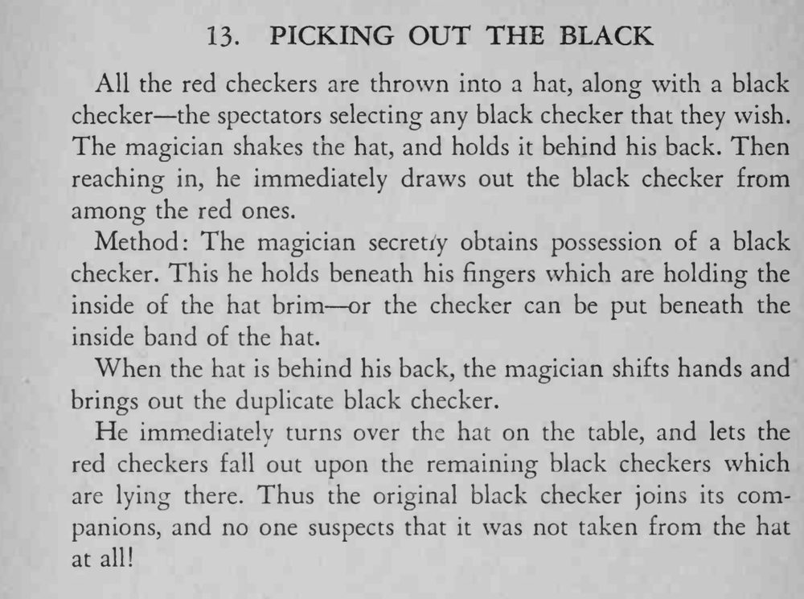

观众把红棋和一枚黑棋丢进帽子里，魔术师把手背到身后伸进帽中，一下就摸出了那枚黑棋。
两枚黑棋要看起来一模一样；倒帽子时别让观众看清里面。

All the red checkers are thrown into a hat, along with a black checker the spectators selecting any black checker that they wish. The magician shakes the hat, and holds it behind his back. Then reaching in, he immediately draws out the black checker from among the red ones. Method: The magician secretry obtains possession of a black checker. This he holds beneath his fingers which are holding the inside of the hat brim or the checker can be put beneath the inside band of the hat. When the hat is behind his back, the magician shifts hands and brings out the duplicate black checker. He immediately turns over the hat on the table, and lets the red checkers fall out upon the remaining black checkers which are lying there. Thus the original black checker joins its companions, and no one suspects that it was not taken from the hat at all!